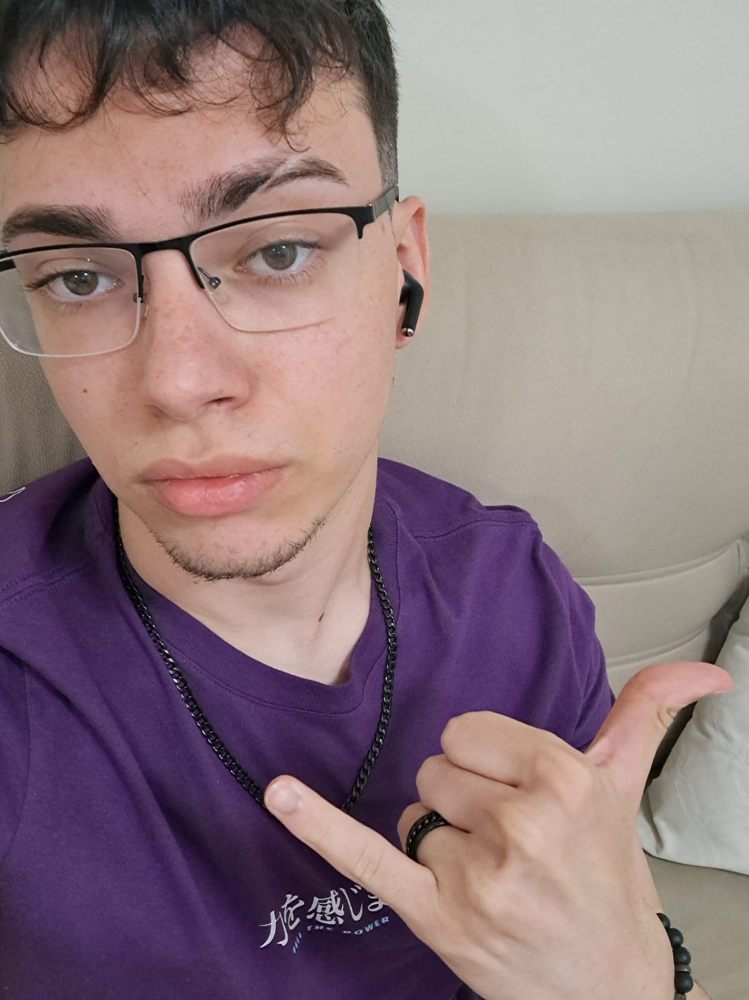
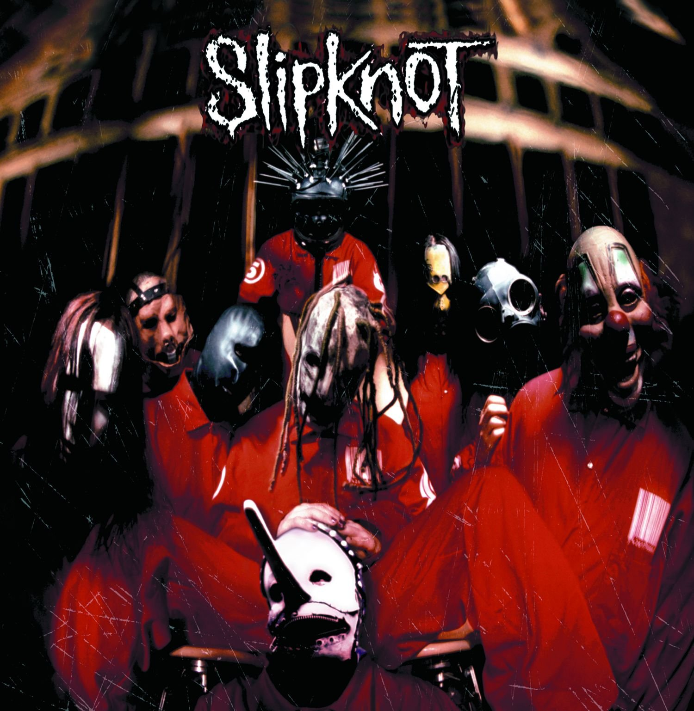
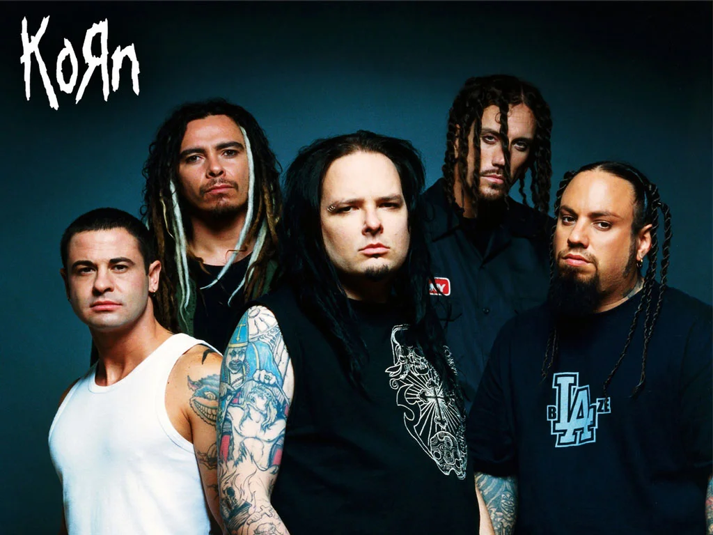
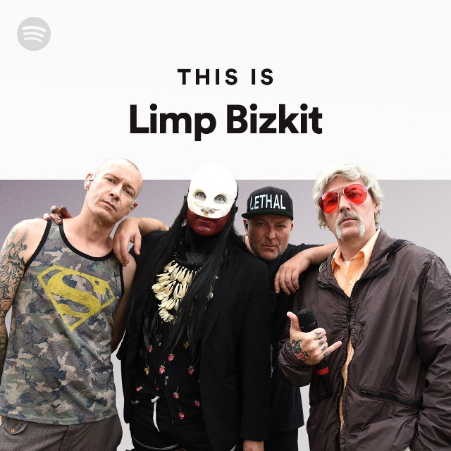

Quem eu sou?

EU :D
Ola pessoal eu me chamo Nicolas Marins Cordeiro, tenho 19 anos e moro em Osasco, SP, sou um cara meio na minha e gosto bastante de jogos digitais e de tocar na minha guitarra, alem de fazer carinho nos gatos da vizinhanca, e no tempo livre enquanto eu nao estou trabalhando ou estudando, gosto jogar um basquete e dar uns roles com meus amigos, falando nisso, eu sou estagiario numa empresa na area de ti, que fica la em Aplha Villie.
Agora que eu ja falei um pouco sobre mim, que tal eu especificar um pouco as coisas:
Meus jogos favoritos
Eu ja zerei diversos jogos, como a franquinha do far cry, devil my cry, assassins creed, GTA, a serie souls, eden ring, sekiro, castavania, jogos indie e muitos outros por ai, mas como tudo na vida, temos nossos favoritos, e de longe eu consigo definir, Dark Souls eh a minha saga de jogos de paixao, a emocao de zerar eles eh uma coisa tao unica, que apenas a fromsofware consegue proporcionar. Mas os jogos multiplayer competitivo nao ficam de fora, ja perdi horas e horas jogando valorant, overwatch, fortnite e alguns outros jogos com meus amigos, afinal de contas, tudo fica melhor com eles.
Vale uma mensao honrosa ao genshin impact, onde eu ja gastei mais de 2,5 mil horas nele, e uma boa parte do meu salario ja foi pra la.
Ja que a serie souls eh minha favorita, irei listar um rank do melhor pro pior
Elden Ring
Dark Souls 3
Sekiro
Dark Souls 1
Demon Souls
Dark Souls 2
Valido uma mensao honrosa a Lies of P, que eh o melhor souls like sem ser da from sofrware
Bandas Favoritas
O metal e o rock foram muito presentens na minha vida, mas teve alguns que marcaram mais, como:
-


